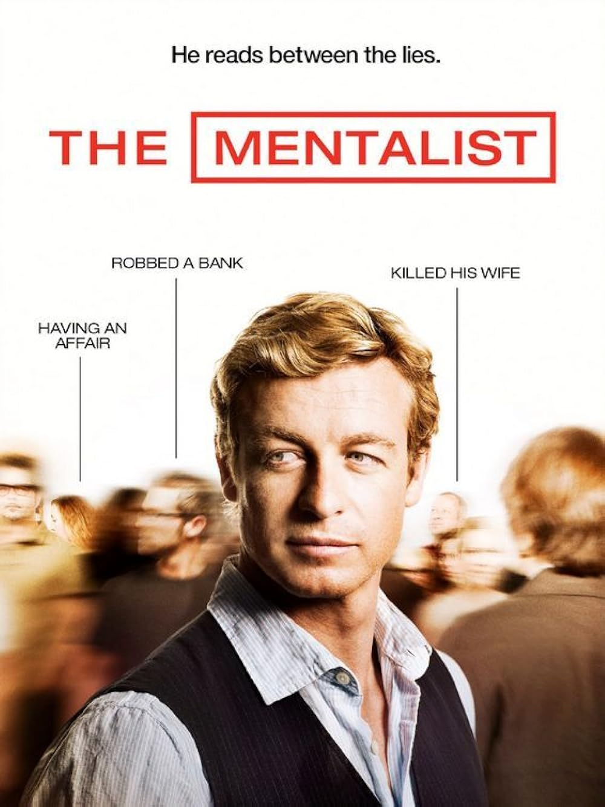
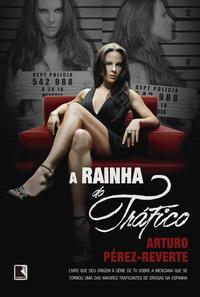
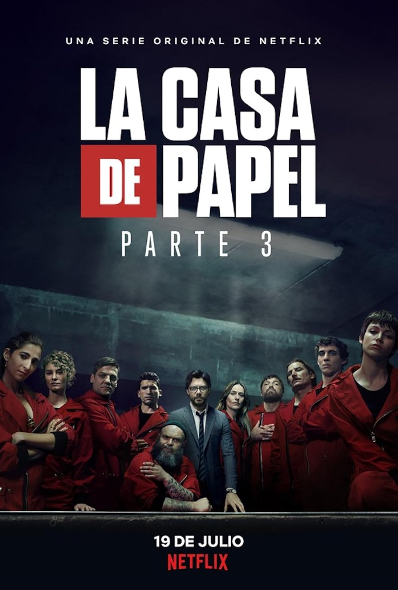

Mentalista

Patrick Jane, um ex-vidente charlatão, passa a colaborar com a polícia da Califórnia usando suas habilidades excepcionais de observação e dedução para resolver crimes complexos. Seu principal objetivo, no entanto, é pessoal: capturar Red John, o misterioso *serial killer* que assassinou sua esposa e filha.
Stranger Things

Quando um garoto desaparece misteriosamente em uma pequena cidade nos anos 80, seus amigos e a polícia descobrem um segredo assustador envolvendo experimentos governamentais secretos, uma garota com poderes telecinéticos e uma dimensão paralela sombria conhecida como o Mundo Invertido.
Sintonia
Criados na mesma favela em São Paulo, três amigos de infância seguem caminhos opostos na juventude — o funk, o tráfico de drogas e a religião —, enquanto tentam realizar seus sonhos e contam com o apoio da amizade para não se perderem.
A Rainha do Tráfico

Teresa Mendoza, uma mulher humilde do México, vê sua vida mudar drasticamente após o assassinato do namorado traficante. Forçada a fugir para a Espanha, ela mergulha no crime e usa sua inteligência para subir na hierarquia do narcotráfico, tornando-se uma poderosa e temida chefona global.
LA CASA DE PAPEL

Um homem misterioso conhecido como "O Professor" reúne oito criminosos com habilidades únicas para realizar o maior assalto da história: invadir a Casa da Moeda da Espanha, imprimir bilhões de euros e manipular a polícia enquanto mantêm dezenas de reféns.